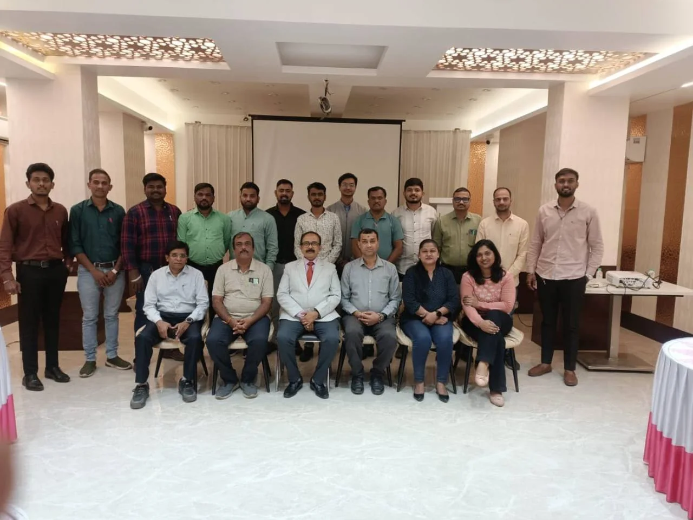
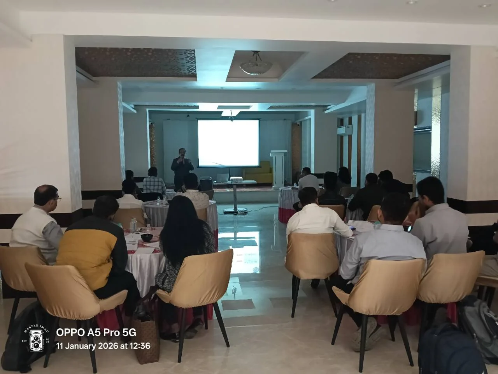
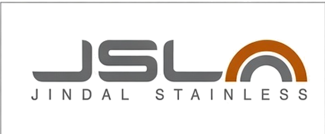
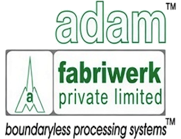
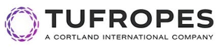

Nashik, Maharashtra · Est. 1999
Better systems.Stronger teams.Lasting quality.
Quality goes beyond a certificate. We help you build practical management systems, prepare for audits, and give your people the skills to keep improving.
Consultancy. Training. Audit readiness. A practical partner, from assessment to improvement.

People at the heart of quality
Building capability. Creating lasting relationships.
Your quality partner / since 1999
Practical experience. Lasting relationships.
Based in Nashik and led by mechanical engineer and lead auditor Mr. Vilas Shinde, SQF helps organizations strengthen systems, build capability, and prepare for third-party assessment.
A complete management solution, since 1999.
SQF is a Nashik practice of auditors and engineers. The work is hands-on: management systems, the people who run them, and readiness for assessment — for organizations across India and those that operate further afield.
Figures as presented in the SQF company profile. A certificate still depends on the scheme and the certification body.
How the work moves
From the requirement to a system that holds.
Plant teams, quality heads, and suppliers usually need the same four things. SQF stays with the work, then leaves the knowledge with the people who will use it.
01
See the gap
Start from the standard, the site, and what a customer or assessor will actually look for.
02
Build the system
Put the management system into the way the organization already works, not into a file that sits on a shelf.
03
Train the people
Awareness, internal auditors, and the tools the team keeps using after the workshop.
04
Stand ready
Second-party audits and assessment preparation, so the findings are clear before a third party arrives.
Explore SQF
Expertise for the next stage of growth.
01
Management systems
Quality, safety, environment, information security, food safety and responsible business.
02
Audits & verification
Agreed criteria, practical gap identification and a clear view of supply-chain performance.
03
Training & development
Management system awareness, internal auditing, social accountability and automotive quality tools.
04
Product compliance
Guidance on product requirements, certification readiness, testing and inspection needs.


People at the heart of quality
Learn together. Improve together.
Explore SQF’s training programmes, see moments from our workshops, and meet the organizations featured in the company profile.
Key clients — consulted services
Beside operations that take quality seriously.
 FOX
FOX Godrej Agrovet
Godrej Agrovet
Jindal Stainless Caparo
Caparo Tata Projects
Tata Projects MSS Products
MSS Products Pik
Pik S D Fine-Chem
S D Fine-Chem
Adam Fabriwerk
Tufropes
Logos identify organizations named in the company profile. The relationship is consultancy and training, not a certification claim.
Next step